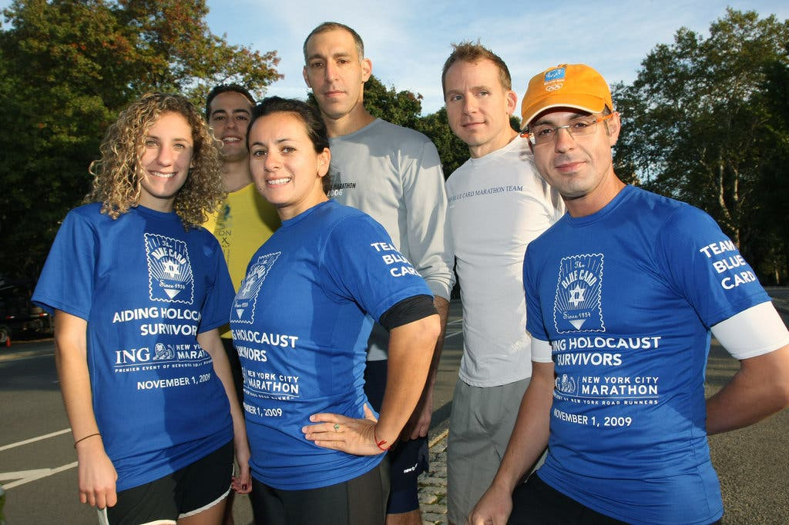

Blog Summary
When Max Lieberman saw a break in the line, he ran. Officers leading the Auschwitz death march shot him, but he kept sprinting through the woods until he collapsed in a field. Farmers nursed him to health, and he never wanted to run again.
When Max Lieberman saw a break in the line, he ran. Officers leading the Auschwitz death march shot him, but he kept sprinting through the woods until he collapsed in a field. Farmers nursed him to health, and he never wanted to run again.
More than 65 years later, Izzy Lieberman will traverse the five boroughs of the New York City Marathon to honor his father’s escape in Poland and to help others whose post-Holocaust journeys have become increasingly difficult to bear.
“I think of him every morning when I’m running,” Lieberman said of his father, Max, who died of pancreatic cancer a decade ago, “and I’m just pushing it and pushing it.”
Lieberman, 51, guaranteed his entry into the Nov. 7 marathon by raising money for the Blue Card, a fund that assists destitute Holocaust survivors in the United States. In the field of 43,000, 7,400 will be running for charity, an increasingly viable way to get into the coveted race for those who do not beat the long lottery odds, qualify by time or live near enough to participate in 10 required races in New York.
Running for charity has been a common way to enter other major marathons for decades — especially in London, where nearly 80 percent of the field of 36,550 ran for charities in 2010, raising $81 million. It is a fairly new phenomenon, however, in New York.
The Blue Card is among 86 charity teams, up from 14 in 2006, when New York started its program. In addition, 104 community charity teams from the New York area will each have 5 to 10 entries. The New York Road Runners, the nonprofit organization that operates the race, estimated that $26.2 million would be raised, about $2 million more than last year’s total and $15 million more than in 2006.
“It’s so compelling,” said Mary Wittenberg, the Road Runners’ chief executive. “The potential we have to have a huge, positive impact on these charities encourages us to be really creative and persistent to increase that impact.”
Yet race officials are trying to balance the rapid growth of the program — which not only benefits the charities, but the Road Runners, too — with its possible pitfalls. New York’s symbiotic financial model reveals the delicate dance of business and philanthropy.
The Road Runners’ minimum fund-raising requirement is $2,500 per runner, which individual charities can set higher. Some may pay the money out of their own pockets just for the privilege of running in the race. In exchange for a high-profile fund-raising platform, the charities pay nonrefundable upfront fees that range from $525 to $950 per entry, depending on perks like advertising, and tents and buses on race day. Such an arrangement brings more than $3.8 million to the Road Runners. Wittenberg said that pays for administration costs, transportation, insurance, medical staff and other race-day items for the marathon runners, in addition to supporting the 58 races and fitness initiatives the organization offers year-round.
Charities like the American Cancer Society, with 300 entries, or Livestrong, with 185, have no trouble generating interest and high-level donations, and by the Oct. 5 deadline, 96 percent of the teams sold out, said Richard Hulnick, the Road Runners charity director.
The New York-based Team Continuum, which is raising money to support families of cancer patients and whose founder, Paul Nicholls, persuaded the Road Runners in 2004 to develop its program, struggled this year. Although partnering with Donna Karan, who designed its race T-shirts, the team will be stuck with 50 unused entries out of the nearly 300 it requested.
“It’s a big loss for us, through nobody’s fault but the economy,” Letty Simon, Team Continuum’s chief operating officer, said.
The charities apply for entry, then negotiate with the Road Runners for the number of slots.
“We want charities to sell out and we work really hard to manage the numbers,” Wittenberg said. “In the future we’ll go to smaller allocations.”
The Blue Card shows that modest direction — for now. The team grew to 55 runners, from 35 last year, and repeatedly appealed to the Road Runners for more entries, even buying some from another charity that could not fill its slots.
“This marathon brought a lot of visibility to the organization and to the cause,” said Elie Rubinstein, the executive director of the Blue Card. “The elderly is not so much a sexy cause.”
Founded in 1934 in Germany to aid Jews in financial distress, the Blue Card now works with Jewish social service agencies in communities in the United States. It provides additional support to Holocaust survivors, like meals and clothing, and sends $100 birthday checks to as many as 2,000 of the estimated 25,000 impoverished survivors in this country.
In New York, the team expects to raise $140,000, all for Holocaust survivors, Rubinstein said, because philanthropic support covers the Blue Card’s administration costs.
Few members knew the charity existed before they joined. The team’s founder, Michelle Hersh of Camas, Wash., learned about it from her teenage daughter, who was completing a service project.
“I just felt this incredible drawing to this charity because there are people who went through this absolute hell,” said Hersh, who lobbied the Road Runners for a year to include the Blue Card. “They are in this state of destitution where they don’t know whether they eat or get vitamins, and they have no one. We have to help.”
Because of the success of the program in New York, the Blue Card now fields teams for the Miami, Los Angeles and Atlanta marathons. Its participation in New York demonstrates how the charity movement there has come full circle.
Fred Lebow, the founder of the race, opposed the concept of paying to run and believed charities would drain resources from the club. Yet when he was treated for brain cancer at Memorial Sloan-Kettering Cancer Center, he saw the benefit of fund-raising for children’s cancer research. Fred’s Team, formed in 1991, became the first official charity of the race.
For Lebow, who died in 1994, the Blue Card’s mission would have also had personal significance. Born Fishl Lebowitz in Arad, Romania, he survived the Holocaust as a teenager, hiding first in his native Romania and then in Bulgaria, and living as a refugee in England and Ireland before coming to the United States.
“I didn’t think of it as what Fred would approve of,” Hulnick said. “I thought it was something we had no representation for — there was nothing else like it. For example, we don’t want 10 autism charities; we want a broad spectrum.”
Not all of the Blue Card members are Jewish. Jesse Dean, 39, of Hoboken, N.J., grew up as a Jehovah’s Witness in rural Montana, where he learned that members of his faith were sent to concentration camps during the Holocaust.
“For me, it’s an opportunity to express the history of hatred toward people who are perceived as different, and to encourage openness,” said Dean, who works with elderly volunteers in New York.
He is halfway to his goal, directing friends and colleagues to the Web site Imathlete.com, which facilitates fund-raising. (Imathlete charges a lower percentage for administration fees than Crowdrise.com, with which the Road Runners partners.)
“People have been generous,” Dean said. “The first question I usually get is, ‘There are still Holocaust survivors?’ ”
Aviva Gat, 22, from Manhattan Beach, Calif., does not need to ask. She is running again this year because her grandmother Rachel is a Holocaust survivor living in Israel.
“She’s very frail,” Gat said, “and I know if she is like that because of the war, so many others are, too.”
Lieberman, an orthopedic surgeon from Plano, Tex., has raised $5,000 from friends, many of whom were also children of survivors. At first he wanted to enter his own charity, the Uganda Spine Mission, but missed the application deadline in June. He then saw the Blue Card on the marathon’s Web site and knew it was the right avenue for his first marathon.
“My father,” Lieberman said, “will be with me every step of the way.”